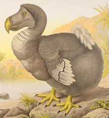

Extinción masiva
La extinción masiva del Holoceno, también conocida como la sexta extinción masiva o la extinción del Antropoceno, es el evento de extinción masiva en el actual período Holoceno.
Comprende la notoria desaparición de mamíferos grandes, conocidos como megafauna, cerca del final de la última glaciación entre 9000 y 13 000 años atrás, y es parte del evento de extinción del Cuaternario tardío, ya que comenzaron en Oceanía y Eurasia hace 50.000 años, casi 40.000 años antes de que empezara el Holoceno
Se considera una extinción masiva pues el número de desapariciones es comparable a las otras grandes extinciones masivas que han marcado el pasado geológico de la Tierra. La actual tasa de extinción es de 100 a 1000 veces el promedio natural en la evolución y en 2007 la Unión Internacional para la Conservación de la Naturaleza consideró que una de cada ocho especies de aves, una de cada cuatro mamíferos, una de cada tres de anfibios y el 70 % de todas las plantas están en peligro.

Dodo, ave extinta por el calentamiento global